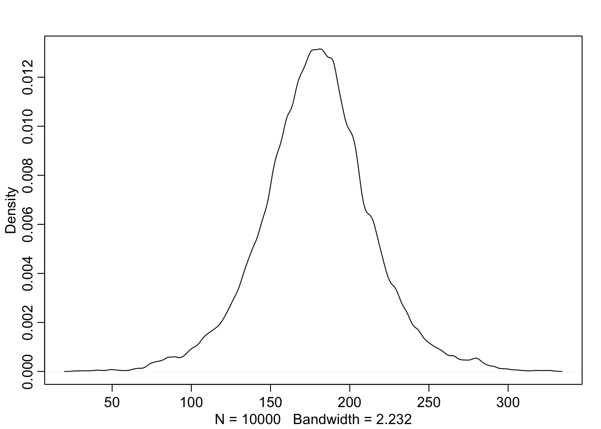
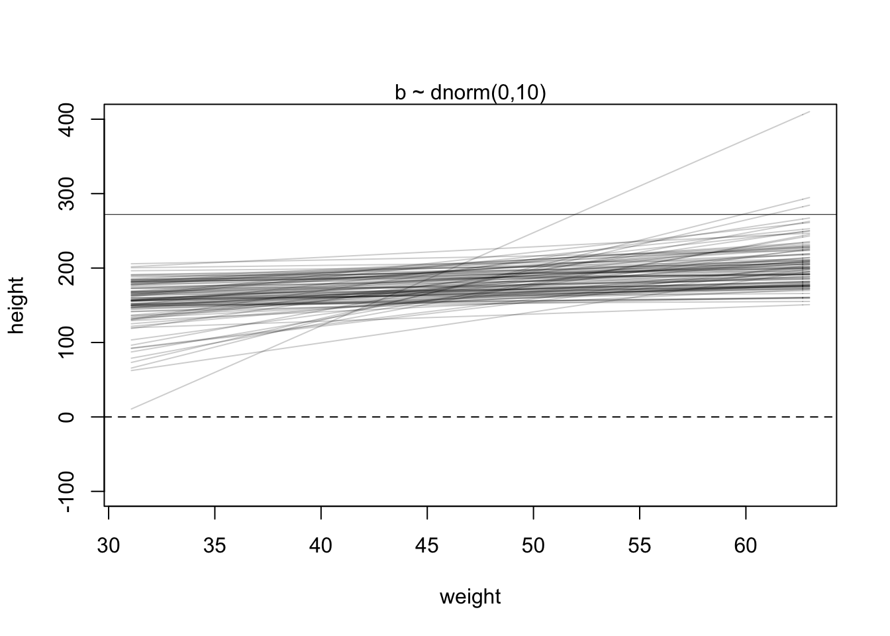
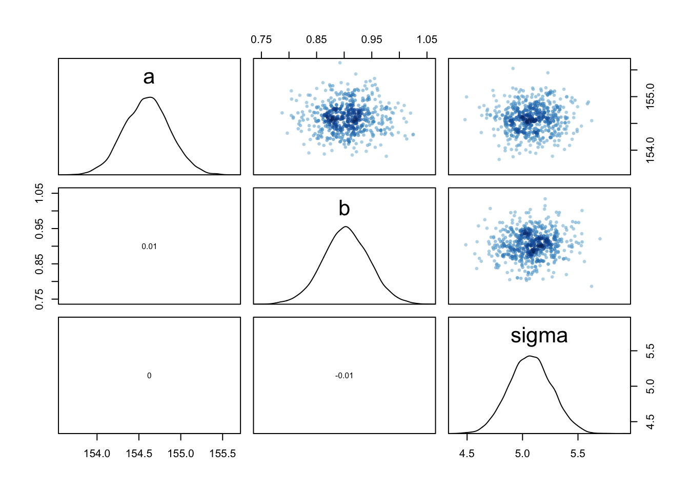

Statistical Rethinking Homework 2 in INLA
library(tidyverse)
library(rethinking)
library(dagitty)
library(INLA)
library(knitr)
library(stringr)Intro to linear prediction from Statistical Rethinking 2nd edition Chapter 4.
Finding the posterior distribution
Bayesian updating will allow us to consider every possible combination of values for μ and σ and to score each combination by its relative plausibility, in light of the data. These relative plausibilities are the posterior probabilities of each combination of values μ, σ. Posterior plausibility provides a measure of the logical compatibility of each possible distribution with the data and model.
The thing to worry about is keeping in mind that the “estimate” here will be the entire posterior distribution, not any point within it. And as a result, the posterior distribution will be a distribution of Gaussian distributions. Yes, a distribution of distributions.
The prior for μ is a broad Gaussian prior, centered on 178cm, with 95% of probability between 178 ± 40.
The weights that interest us are all adult weights, so we can analyze only the adults and make an okay linear approximation.
data(Howell1)
d <- Howell1
d2 <- d[ d$age >= 18 , ]
xbar <- mean(d2$weight) The golem is assuming that the average height (not each individual height) is almost certainly between 140 cm and 220 cm
#plot mean prior
curve( dnorm( x , 178 , 20 ) , from=100 , to=250 )The σ prior is a truly flat prior, a uniform one, that functions just to constrain σ to have positive probability between zero and 50cm. A standard deviation of 50cm would imply that 95% of individual heights lie within 100cm of the average height. That’s a very large range.
#plot sd prior
curve( dunif( x , 0 , 50 ) , from=-10 , to=60 )The prior predictive simulation is an essential part of your modeling. Once you’ve chosen priors for h, μ, and σ, these imply a joint prior distribution of individual heights. By simulating from this distribution, you can see what your choices imply about observable height. This helps you diagnose bad choices. Lots of conventional choices are indeed bad ones, and we’ll be able to see this through prior predictive simulations.
Okay, so how to do this? You can quickly simulate heights by sampling from the prior.
sample_mu <- rnorm( 1e4 , 178 , 20 )
sample_sigma <- runif( 1e4 , 0 , 50 )
prior_h <- rnorm( 1e4 , sample_mu , sample_sigma )
#prior_h
dens( prior_h )
This is the expected distribution of heights, averaged over the prior. Notice that the prior probability distribution of height is not itself Gaussian. This is okay. The distribution you see is not an empirical expectation, but rather the distribution of relative plausibilities of different heights, before seeing the data.
μ i = α + β ( x i − ̄x )
What this tells the regression golem is that you are asking two questions about the mean of the outcome.
What is the expected height when xi = ̄x? The parameter α answers this question, because when xi = ̄x, μi = α. For this reason, α is often called the intercept. But we should think not in terms of some abstract line, but rather in terms of the meaning with respect to the observable variables.
What is the change in expected height, when xi changes by 1 unit? The parameter β answers this question. It is often called a “slope,” again because of the abstract line. Better to think of it as a rate of change in expectation. Jointly these two parameters ask the golem to find a line that relates x to h, a line that passes through α when xi = ̄x and has slope β. That is a task that golems are very good at. It’s up to you, though, to be sure it’s a good question.
The goal is to simulate heights from the model, using only the priors. First, let’s consider a range of weight values to simulate over. The range of observed weights will do fine. Then we need to simulate a bunch of lines, the lines implied by the priors for α and β. Now we have 100 pairs of α and β values. Now to plot the lines:
set.seed(2971)
N <- 100 # 100 lines
a <- rnorm( N , 178 , 20 )
b <- rnorm( N , 0 , 10 )
plot( NULL , xlim=range(d2$weight) , ylim=c(-100,400) ,
xlab="weight" , ylab="height" )
abline( h=0 , lty=2 )
abline( h=272 , lty=1 , lwd=0.5 )
mtext( "b ~ dnorm(0,10)" )
xbar <- mean(d2$weight)
for ( i in 1:N ) curve( a[i] + b[i]*(x - xbar) ,
from=min(d2$weight) , to=max(d2$weight) , add=TRUE ,
col=col.alpha("black",0.2) )If the logarithm of β is normal, then β itself is strictly positive. The reason is that exp(x) is greater than zero for any real number x. This is the reason that Log-Normal priors are commonplace. They are an easy way to enforce positive relationships
set.seed(2971)
N <- 100 # 100 lines
a <- rnorm( N , 178 , 20 )
b <- rlnorm( N , 0 , 1 )
plot( NULL , xlim=range(d2$weight) , ylim=c(-100,400) ,
xlab="weight" , ylab="height" )
abline( h=0 , lty=2 )
abline( h=272 , lty=1 , lwd=0.5 )
mtext( "b ~ dnorm(0,10)" )
xbar <- mean(d2$weight)
for ( i in 1:N ) curve( a[i] + b[i]*(x - xbar) ,
from=min(d2$weight) , to=max(d2$weight) , add=TRUE ,
col=col.alpha("black",0.2) )
Overthinking: Logs and exps, oh my. My experience is that many natural and social scientists have naturally forgotten whatever they once knew about logarithms. Logarithms appear all the time in applied statistics. You can usefully think of y = log(x) as assigning to y the order of magnitude of x. The function x = exp(y) is the reverse, turning a magnitude into a value. These definitions will make a mathematician shriek. But much of our computational work relies only on these intuitions. These definitions allow the Log-Normal prior for β to be coded another way. Instead of defining a parameter β, we define a parameter that is the logarithm of β and then assign it a normal distribution. Then we can reverse the logarithm inside the linear model. It looks like this:
m4.3b <- quap( alist(
height ~ dnorm( mu , sigma ) ,
mu <- a + exp(log_b)*( weight - xbar ), a ~ dnorm( 178 , 20 ) ,
log_b ~ dnorm( 0 , 1 ) ,
sigma ~ dunif( 0 , 50 )
) , data=d2 )Note the exp(log_b) in the definition of mu. This is the same model as m4.3. It will make the same predictions. But instead of β in the posterior distribution, you get log(β). It is easy to translate between the two, because β = exp(log(β)). In code form: b <- exp(log_b).
Interpreting the posterior distribution. One trouble with statistical models is that they are hard to understand. Once you’ve fit the model, it can only report posterior distribution. This is the right answer to the question you asked. But it’s your responsibility to process the answer and make sense of it.
m4.3 <- quap(
alist(
height ~ dnorm( mu , sigma ) ,
mu <- a + b*( weight - xbar ) ,
a ~ dnorm( 178 , 20 ) ,
b ~ dlnorm( 0 , 1 ) ,
sigma ~ dunif( 0 , 50 )
), data=d2 )
precis(m4.3)## mean sd 5.5% 94.5%
## a 154.6013713 0.2703075 154.1693677 155.0333748
## b 0.9032763 0.0419236 0.8362742 0.9702783
## sigma 5.0718775 0.1911545 4.7663757 5.3773792The first row gives the quadratic approximation for α, the second the approximation for β, and the third approximation for σ. Let’s try to make some sense of them.
Let’s focus on b (β), because it’s the new parameter. Since β is a slope, the value 0.90 can be read as a person 1 kg heavier is expected to be 0.90 cm taller. 89% of the posterior probability lies between 0.84 and 0.97. That suggests that β values close to zero or greatly above one are highly incompatible with these data and this model. It is most certainly not evidence that the relationship between weight and height is linear, because the model only considered lines. It just says that, if you are committed to a line, then lines with a slope around 0.9 are plausible ones.
You can see the covariances among the parameters with vcov:
round( vcov( m4.3 ) , 3 )## a b sigma
## a 0.073 0.000 0.000
## b 0.000 0.002 0.000
## sigma 0.000 0.000 0.037# shows both the marginal posteriors and the covariance.
pairs(m4.3)
Very little covariation among the parameters in this case. The lack of covariance among the parameters results from centering.
Plotting posterior inference against the data. It’s almost always much more useful to plot the posterior inference against the data. Not only does plotting help in interpreting the posterior, but it also provides an informal check on model assumptions. When the model’s predictions don’t come close to key observations or patterns in the plotted data, then you might suspect the model either did not fit correctly or is rather badly specified. But even if you only treat plots as a way to help in interpreting the posterior, they are invaluable.
Each point in this plot is a single individual. The black line is defined by the mean slope β and mean intercept α = the posterior mean line. It looks highly plausible. But there an infinite number of other highly plausible lines near it. Let’s draw those too.
plot( height ~ weight , data=d2 , col=rangi2 )
post <- extract.samples( m4.3 )
a_map <- mean(post$a)
b_map <- mean(post$b)
curve( a_map + b_map*(x - xbar) , add=TRUE )post <- extract.samples( m4.3 ) = Each row is a correlated random sample from the joint posterior of all three parameters, using the covariances provided by vcov(m4.3). The paired values of a and b on each row define a line. The average of very many of these lines is the posterior mean line. But the scatter around that average is meaningful, because it alters our confidence in the relationship between the predictor and the outcome.
Let’s display a bunch of these lines, so you can see the scatter. This lesson will be easier to appreciate, if we use only some of the data to begin. Then you can see how adding in more data changes the scatter of the lines. So we’ll begin with just the first 10 cases in d2. The following code extracts the first 10 cases and re-estimates the model:
N <- 10
dN <- d2[ 1:N , ]
mN <- quap(
alist(
height ~ dnorm( mu , sigma ) ,
mu <- a + b*( weight - mean(weight) ) ,
a ~ dnorm( 178 , 20 ) ,
b ~ dlnorm( 0 , 1 ) ,
sigma ~ dunif( 0 , 50 )
) , data=dN )Now let’s plot 20 of these lines, to see what the uncertainty looks like.
# extract 20 samples from the posterior
post <- extract.samples( mN , n=20 )
# display raw data and sample size
plot( dN$weight , dN$height ,
xlim=range(d2$weight) , ylim=range(d2$height) ,
col=rangi2 , xlab="weight" , ylab="height" )
mtext(concat("N = ",N))
# plot the lines, with transparency
for ( i in 1:20 )
curve( post$a[i] + post$b[i]*(x-mean(dN$weight)) ,
col=col.alpha("black",0.3) , add=TRUE )Increae the amounts of data. Notice that the cloud of regression lines grows more compact as the sample size increases. This is a result of the model growing more confident about the location of the mean.
N <- 352
dN <- d2[ 1:N , ]
mN <- quap(
alist(
height ~ dnorm( mu , sigma ) ,
mu <- a + b*( weight - mean(weight) ) ,
a ~ dnorm( 178 , 20 ) ,
b ~ dlnorm( 0 , 1 ) ,
sigma ~ dunif( 0 , 50 )
) , data=dN )
# extract 20 samples from the posterior
post <- extract.samples( mN , n=20 )
# display raw data and sample size
plot( dN$weight , dN$height ,
xlim=range(d2$weight) , ylim=range(d2$height) ,
col=rangi2 , xlab="weight" , ylab="height" )
mtext(concat("N = ",N))
# plot the lines, with transparency
for ( i in 1:20 )
curve( post$a[i] + post$b[i]*(x-mean(dN$weight)) ,
col=col.alpha("black",0.3) , add=TRUE )Focus for the moment on a single weight value, say 50 kilograms. You can quickly make a list of 10,000 values of μ (height)for an individual who weighs 50 kilograms, by using your samples from the posterior.
μ i = α + β ( x i − ̄x ) The value of xi in this case is 50.
mu_at_50 is a vector of predicted means, one for each random sample from the posterior. Since joint a and b went into computing each, the variation across those means incorporates the uncertainty in and correlation between both parameters. It might be helpful at this point to actually plot the density for this vector of means.
Since the components of μ have distributions, so too does μ. And since the distributions of α and β are Gaussian, so to is the distribution of μ (adding Gaussian distributions always produces a Gaussian distribution). Since the posterior for μ is a distribution, you can find intervals for it, just like for any posterior distribution. The central 89% of the ways for the model to produce the data place the average height between about 159 cm and 160 cm (conditional on the model and data), assuming the weight is 50 kg.
post <- extract.samples( m4.3 )
mu_at_50 <- post$a + post$b * ( 50 - xbar )
dens( mu_at_50 , col=rangi2 , lwd=2 , xlab="mu|weight=50" )
PI( mu_at_50 , prob=0.89 )## 5% 94%
## 158.5677 159.6695That’s good so far, but we need to repeat the above calculation for every weight value on the horizontal axis, not just when it is 50 kg. We want to draw 89% intervals around the average slope.
This is made simple by strategic use of the link function, a part of the rethinking package. What link will do is take your quap approximation, sample from the posterior distribution, and then compute μ for each case in the data and sample from the posterior distribution. Here’s what it looks like for the data you used to fit the model:
mu <- link( m4.3 )
str(mu)## num [1:1000, 1:352] 157 157 157 157 157 ...You end up with a big matrix of values of μ. Each row is a sample from the posterior distribu- tion. There are 352 rows in d2, corresponding to 352 individuals. So there are 352 columns in the matrix mu above. link takes 1000 samples of the posterior dist. for every value in the data (of weight in this case).
this is what the rethinking::link function does:
post <- extract.samples(m4.3)
mu.link <- function(weight) post$a + post$b*( weight - xbar )
weight.seq <- seq( from=25 , to=70 , by=1 )
mu <- sapply( weight.seq , mu.link )
mu.mean <- apply( mu , 2 , mean )
mu.CI <- apply( mu , 2 , PI , prob=0.89 )The function link provides a posterior distribution of μ for each case we feed it. So above we have a distribution of μ for each individual in the original data. We actually want something slightly different: a distribution of μ for each unique weight value on the horizontal axis.
# define sequence of weights to compute predictions for
# these values will be on the horizontal axis
weight.seq <- seq( from=25 , to=70 , by=1 )
# use link to compute mu
# for each sample from posterior
# and for each weight in weight.seq
mu <- link( m4.3 , data=data.frame(weight=weight.seq) )
str(mu)## num [1:1000, 1:46] 137 136 138 136 136 ...And now there are only 46 columns in mu, because we fed it 46 different values for weight.
To visualize what you’ve got here, let’s plot the distribution of μ values at each height.
# use type="n" to hide raw data
plot( height ~ weight , d2 ) #, type="n" )
# loop over samples and plot each mu value
for ( i in 1:100 )
points( weight.seq , mu[i,] , pch=16 , col=col.alpha(rangi2,0.1) )
At each weight value in weight.seq, a pile of computed μ values are shown. Each of these piles is a Gaussian distribution, the amount of uncertainty in μ depends upon the value of weight.
The final step is to summarize the distribution for each weight value. We’ll use apply, which applies a function of your choice to a matrix.
mu.mean contains the average μ at each weight value, and mu.PI contains 89% lower and upper bounds for each weight value.
# summarize the distribution of mu
#compute the mean of each column (dimension “2”) of the matrix mu.
mu.mean <- apply( mu , 2 , mean )
mu.PI <- apply( mu , 2 , PI , prob=0.89 )
# plot raw data
# fading out points to make line and interval more visible
plot( height ~ weight , data=d2 , col=col.alpha(rangi2,0.5) )
# plot the MAP line, aka the mean mu for each weight
lines( weight.seq , mu.mean )
# plot a shaded region for 89% PI
shade( mu.PI , weight.seq )To summarize, here’s the recipe for generating predictions and intervals from the poste- rior of a fit model.
Use link to generate distributions of posterior values for μ. The default behavior of link is to use the original data, so you have to pass it a list of new horizontal axis values you want to plot posterior predictions across.
Use summary functions like mean or PI to find averages and lower and upper bounds of μ for each value of the predictor variable.
Finally,use plotting functions like lines and shade to draw the lines and intervals. Or you might plot the distributions of the predictions, or do further numerical calculations with them. It’s really up to you.
This recipe works for every model we fit in the book. As long as you know the structure of the model—how parameters relate to the data—you can use samples from the posterior to describe any aspect of the model’s behavior.
Prediction intervals Now let’s walk through generating an 89% prediction in- terval for actual heights, not just the average height, μ. This means we’ll incorporate the standard deviation σ and its uncertainty as well. Remember, the first line of the statistical model here is:
hi ∼ Normal(μi, σ)
What you’ve done so far is just use samples from the posterior to visualize the uncertainty in μi, the linear model of the mean. But actual predictions of heights depend also upon the distribution in the first line. The Gaussian distribution on the first line tells us that the model expects observed heights to be distributed around μ, not right on top of it. And the spread around μ is governed by σ. All of this suggests we need to incorporate σ in the predictions somehow.
Here’s how you do it. Imagine simulating heights. For any unique weight value, you sample from a Gaussian distribution with the correct mean μ for that weight, using the correct value of σ sampled from the same posterior distribution. If you do this for every sample from the posterior, for every weight value of interest, you end up with a collection of simulated heights that embody the uncertainty in the posterior as well as the uncertainty in the Gaussian distribution of heights. There is a tool called sim which does this.
This matrix is much like the earlier one, mu, but it contains simulated heights, not distributions of plausible average height, μ.
We can summarize these simulated heights in the same way we summarized the distributions of μ, by using the PI function over apply.
sim.height <- sim( m4.3 , data=list(weight=weight.seq) )
#This matrix is much like the earlier one, mu, but it contains simulated heights, not distributions of plausible average height, μ.
str(sim.height)## num [1:1000, 1:46] 145 126 137 137 142 ...#height.PI contains the 89% posterior prediction interval of observable (according to the model) heights, across the values of weight in weight.seq
height.PI <- apply( sim.height , 2 , PI , prob=0.89 )Let’s plot everything we’ve built up: (1) the average line (2) the shaded region of 89% plausible μ (3) the boundaries of the simulated heights the model expects.
# plot raw data
plot( height ~ weight , d2 , col=col.alpha(rangi2,0.5) )
# draw MAP line : the average line of all the mean heights expected by the linear model for each weight
#mu.link <- function(weight) post$a + post$b*( weight - xbar )
#weight.seq <- seq( from=25 , to=70 , by=1 )
#mu <- sapply( weight.seq , mu.link )
#mu.mean <- apply( mu , 2 , mean )
lines( weight.seq , mu.mean )
# draw 89% region for line
shade( mu.PI , weight.seq )
# draw PI region for simulated heights:
#the area within which the model expects to find 89% of actual heights in the population, at each weight.
shade( height.PI , weight.seq )89% prediction interval for height, as a function of weight. The solid line is the average line for the mean height at each weight. The two shaded regions show different 89% plausible regions. The narrow shaded in- terval around the line is the distribution of μ. The wider shaded region represents the region within which the model expects to find 89% of actual heights in the population, at each weight.
this is what the rethinking::sim function does
#extract samples automatically extracts 1000 from posterior dist
post <- extract.samples(m4.3)
weight.seq <- 25:70
sim.function <- function(weight)
rnorm(
n=nrow(post) ,
mean=post$a + post$b*( weight - xbar ) ,
sd=post$sigma )
sim.height <- sapply( weight.seq , sim.function )
##compute the mean of each column (dimension “2”) of the matrix mu.
height.interval <- apply(sim.height, 2, quantile, c( 0.05 , 0.94 ))
#example of compatibility interval for 1st col (first weight)
#quantile(sim.height[,1],c( 0.05 , 0.94 ) )
# plot raw data
plot( height ~ weight , d2 , col=col.alpha(rangi2,0.5) )
# draw MAP line
lines( weight.seq , mu.mean )
# draw HPDI region for line
shade( mu.PI , weight.seq )
# draw PI region for simulated heights
shade( height.interval, weight.seq )Rethinking: Two kinds of uncertainty. In the procedure above, we encountered both uncertainty in parameter values and uncertainty in a sampling process. These are distinct concepts, even though they are processed much the same way and end up blended together in the posterior predictive simu- lation. The posterior distribution is a ranking of the relative plausibilities of every possible combina- tion of parameter values. The distribution of simulated outcomes, like height, is instead a distribution that includes sampling variation from some process that generates Gaussian random variables. This sampling variation is still a model assumption. It’s no more or less objective than the posterior distribution. Both kinds of uncertainty matter, at least sometimes. But it’s important to keep them straight, because they depend upon different model assumptions.
HOMEWORK 2
1.
The weights listed below were recorded in the !Kung census, but heights were not recorded for these individuals. Provide predicted heights and 89% compatibility intervals for each of these individuals, using model-based predictions.
ind <- 1:5
weight <- c(45, 40, 65, 31, 53)
expected_height <- NA
interval <- NA
kung <- bind_cols(ind, weight, expected_height, interval)## New names:
## * NA -> ...1
## * NA -> ...2
## * NA -> ...3
## * NA -> ...4colnames(kung) <- c("individual", "weight", "expected_height", "89%interval")
kable(kung)| individual | weight | expected_height | 89%interval |
|---|---|---|---|
| 1 | 45 | NA | NA |
| 2 | 40 | NA | NA |
| 3 | 65 | NA | NA |
| 4 | 31 | NA | NA |
| 5 | 53 | NA | NA |
1. rethinking
m4.3 <- quap(
alist(
height ~ dnorm( mu , sigma ) ,
mu <- a + b*( weight - xbar ) ,
a ~ dnorm( 178 , 20 ) ,
b ~ dlnorm( 0 , 1 ) ,
sigma ~ dunif( 0 , 50 )
), data=d2 )
precis(m4.3)## mean sd 5.5% 94.5%
## a 154.6013672 0.27030763 154.1693634 155.0333710
## b 0.9032809 0.04192363 0.8362788 0.9702829
## sigma 5.0718803 0.19115473 4.7663781 5.3773825Now we need posterior predictions for each case in the table. Easiest way to do this is to use sim. We need sim, not just link, because we are trying to predict an individual’s height. So the relevant compatibility interval includes the Gaussian variance from sigma. If you provided only the compatibility interval for μ, that’s okay. But be sure you understand the difference.
Solution using rethinking functions
dat <- data.frame(weight= c(45, 40, 65, 31, 53))
h_sim <- sim( m4.3 , data=dat )
Eh <- apply(h_sim,2,mean)
h_ci <- apply(h_sim,2,PI,prob=0.89)
dat$Eh <- Eh
dat$L89 <- h_ci[1,]
dat$U89 <- h_ci[2,]
round(dat,1)## weight Eh L89 U89
## 1 45 154.6 146.6 163.0
## 2 40 149.9 141.8 157.9
## 3 65 172.7 164.5 181.1
## 4 31 141.9 133.6 150.2
## 5 53 162.1 154.2 169.8Solution using base r functions
weight= c(45, 40, 65, 31, 53)
sim.hw2.fun <- function(weight, model) {
post.hw2 = extract.samples(model)
rnorm(
n= nrow(post),
mean= post$a + post$b*(weight - xbar),
sd= post$sigma)
}
sim.hw2 <- sapply(weight, sim.hw2.fun , m4.3)
hw2.mean <- apply(sim.hw2,2, mean)
hw2.ci <- apply(sim.hw2,2, quantile, c(0.05, 0.95))
hw2.1 <- data.frame(weight= c(45, 40, 65, 31, 53)) %>%
mutate(expected_height= hw2.mean,
LCI= hw2.ci[1],
UCI = hw2.ci[2])
print(hw2.1)## weight expected_height LCI UCI
## 1 45 154.5601 146.0763 162.9388
## 2 40 150.1655 146.0763 162.9388
## 3 65 172.7602 146.0763 162.9388
## 4 31 141.9387 146.0763 162.9388
## 5 53 161.8957 146.0763 162.93881. inla
library(brinla)
library("inlabru")The default mean and precision for fixed effects are:
inla.set.control.fixed.default()[c('mean','prec')]## $mean
## [1] 0
##
## $prec
## [1] 0.001We see that the default prior on beta is normal with mean zero and precision 0.001. The precision is the inverse of the variance. We convert this to SD:
sqrt(1/0.001)## [1] 31.62278We wish to predict the response at a new set of inputs. We add a case for the new inputs (weight= c(45, 40, 65, 31, 53)) and set the response to missing (height=NA):
data(Howell1)
d <- Howell1
d2 <- d[ d$age >= 18 , ]
dat <- data.frame(weight= c(45, 40, 65, 31, 53))
xbar <- mean(d2$weight)
new_w <- bind_cols(weight, NA)## New names:
## * NA -> ...1
## * NA -> ...2colnames(new_w) <- c("weight", "height")
# add the weight values of interest to the dataframe
d1.i <- d2 %>%
select(c("weight", "height")) %>%
rbind(new_w) %>%
mutate(w= weight-xbar) %>%
select( c("height", "w"))
#indices of the weights with missing values of height
d1.i.na <- which(is.na(d1.i$height))
#We need to set the control.predictor to compute the posterior means of the linear predictors
m1.i<- inla(height ~ w, data= d1.i,
control.fixed = list(
mean= 0,
prec= 1,
mean.intercept= 178,
prec.intercept= 1/(20^2)),# sd = 20 --> precision =1/variance --> 1/(sd^2)
control.compute = list(config= TRUE),
control.predictor=list(compute=TRUE)
)
# posterior means and SDs from the INLA fit
m1.i$summary.fixed[,1:2]## mean sd
## (Intercept) 154.6013921 0.27107172
## w 0.9034319 0.04200942# the summary statistics of the fitted values for the weight values of interest can be shown using index of the values with the missing height
m1.i$summary.fitted.values[d1.i.na, ]## mean sd 0.025quant 0.5quant 0.975quant mode
## fitted.Predictor.353 154.6100 0.2710729 154.0782 154.6100 155.1417 154.6100
## fitted.Predictor.354 150.0928 0.3426798 149.4206 150.0928 150.7651 150.0927
## fitted.Predictor.355 172.6786 0.8831834 170.9456 172.6787 174.4108 172.6789
## fitted.Predictor.356 141.9619 0.6472126 140.6924 141.9619 143.2316 141.9617
## fitted.Predictor.357 161.8374 0.4320724 160.9897 161.8375 162.6849 161.83752.
Model the relationship between height(cm) and the natural logarithm of weight (log-kg): log(weight). Use the entire Howell1 data frame, all 544 rows, adults and non-adults. Use any model type from Chapter 4 that you think useful: an ordinary linear regression, a polynomial or a spline. Plot the posterior predictions against the raw data.
2.rethinking
library(rethinking)
data(Howell1)
d <- Howell1
d$log_weight <- log(d$weight)
xbar <- mean(d$log_weight)
m2 <- quap(
alist(
height ~ dnorm( mu , sigma ) ,
mu <- a + b*( log_weight - xbar ) ,
a ~ dnorm( 178 , 20 ) ,
b ~ dlnorm( 0 , 1 ) ,
sigma ~ dunif( 0 , 50 )
), data=d )
precis(m2)## mean sd 5.5% 94.5%
## a 138.268410 0.2201360 137.916591 138.620230
## b 47.071138 0.3826317 46.459618 47.682657
## sigma 5.134716 0.1556694 4.885926 5.383506plot( d$weight , d$height , col=col.alpha(rangi2,0.7) )
x_seq <- log(1:60)
mu <- sim( m2 , data=list(log_weight=x_seq) )
mu_mean <- apply(mu,2,mean)
mu_ci <- apply(mu,2,PI,0.99)
lines( exp(x_seq) , mu_mean )
shade( mu_ci , exp(x_seq) )
You could certainly do better—the trend is under-predicting in the mid ages. But just taking the log of weight does most of the work. Why? It’ll help to think of a human body as a cylinder. Roughly. The weight of a cylinder is proportional to its volume. And the volume of a cylinder is: V = πr2h where r is the radius and h is the height. As the cylinder, uh human, gets taller, the radius gets bigger. So we can just say the radius is some fraction α of the height: Substituting that in: r = αh V = πα2h3 = kh3 where k = πα2 is just some proportionality constant.
2.INLA
library(rethinking)
library(brinla)
library(INLA)
library(tidyverse)
data(Howell1)
d <- Howell1
log_wplot <- log(1:60)
new_logw <- bind_cols(log_wplot, NA)## New names:
## * NA -> ...1
## * NA -> ...2colnames(new_logw) <- c("log_weight", "height")
# add the weight values of interest to the dataframe
d2.i <- d %>%
mutate(log_weight= log(weight)) %>%
select(c("log_weight", "height")) %>%
rbind(new_logw) %>%
mutate(xbar= mean(log_weight),
log_w= log_weight - xbar)
m2.i<- inla(height ~ f(log_w, model = "clinear", range=c(0, Inf),
hyper=list(theta=list(prior = "normal", param=c(0, 1)))), data= d2.i,
control.fixed = list(
mean.intercept= 178,
prec.intercept= 1/(20^2)),# sd = 20 --> precision =1/variance --> 1/(sd^2)
control.compute = list(config= TRUE),
control.predictor=list(compute=TRUE),
control.inla = list(h = 0.0001),
verbose = TRUE
)
summary(m2.i)##
## Call:
## c("inla(formula = height ~ f(log_w, model = \"clinear\", range = c(0, ", " Inf), hyper =
## list(theta = list(prior = \"normal\", param = c(0, ", " 1)))), data = d2.i, verbose =
## TRUE, control.compute = list(config = TRUE), ", " control.predictor = list(compute =
## TRUE), control.inla = list(h = 1e-04), ", " control.fixed = list(mean.intercept = 178,
## prec.intercept = 1/(20^2)))" )
## Time used:
## Pre = 1.59, Running = 8.92, Post = 1.75, Total = 12.3
## Fixed effects:
## mean sd 0.025quant 0.5quant 0.975quant mode kld
## (Intercept) 136.873 0.221 136.439 136.873 137.306 136.873 0
##
## Random effects:
## Name Model
## log_w Constrained linear
##
## Model hyperparameters:
## mean sd 0.025quant 0.5quant 0.975quant mode
## Precision for the Gaussian observations 0.019 0.001 0.017 0.019 0.021 0.018
## Beta for log_w 38.943 0.569 38.119 38.847 40.277 38.480
##
## Expected number of effective parameters(stdev): 1.00(0.00)
## Number of equivalent replicates : 543.99
##
## Marginal log-Likelihood: -1876.01
## Posterior marginals for the linear predictor and
## the fitted values are computedbri.hyperpar.summary(m2.i)## mean sd q0.025 q0.5 q0.975 mode
## SD for the Gaussian observations 7.308269 0.2097979 6.829608 7.340101 7.61790 7.48945
## Beta for log_w 38.943357 0.5687572 38.129274 38.844439 40.26721 38.43846#indices of the weights with missing values of height
d2.i.na <- which(is.na(d2.i$height))
# the summary statistics of the fitted values for the weight values of interest can be shown using index of the values with the missing height m2.i$summary.fitted.values[d2.i.na, ]
m2.i.postmean <- bind_cols( new_logw[,1], m2.i$summary.linear.predictor[d2.i.na,]) %>%
select(c("log_weight", "mean", "sd", "0.5quant", "0.975quant"))
names(m2.i.postmean) <- c("log_weight", "mean", "sd", "LCI", "UCI")
m2.i.plot <- ggplot()+
geom_point(data= d, aes(weight, height))+
geom_line(data= m2.i.postmean, aes(exp(log_weight), mean))+
geom_ribbon(data= m2.i.postmean, aes(exp(log_weight), ymin= LCI, ymax= UCI))
m2.i.plot